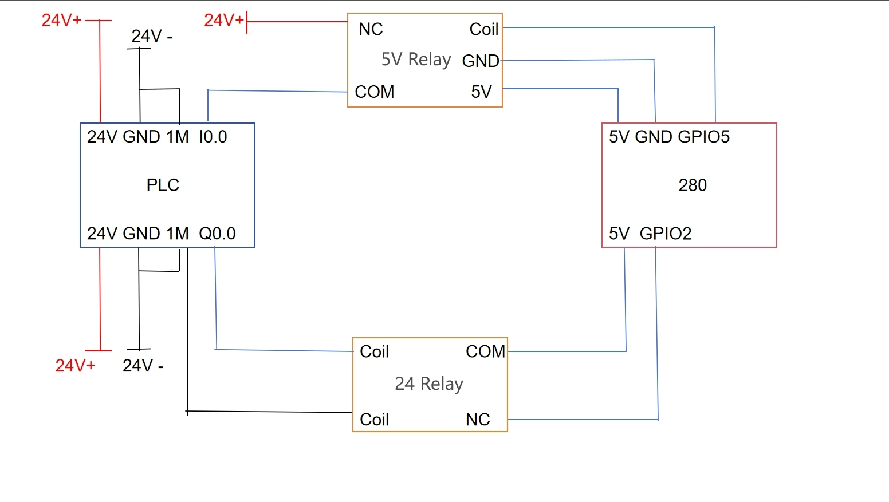
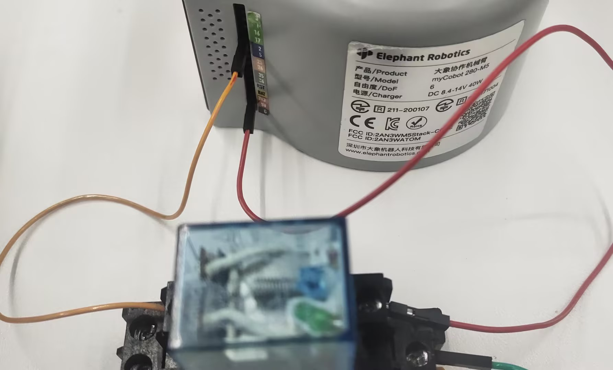
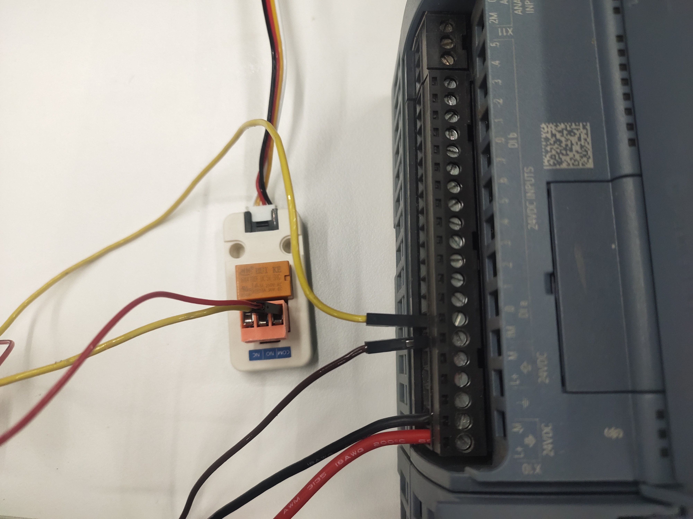

Chapter 7 Successful Cases
myCobot 280 series robot arms support more than ten kinds of accessories, including bases, end extensions, peripheral products, etc. Multiple accessories can be stacked to complete complex project applications and meet the needs of commercial exhibitions, such as robot application model display, educational teaching package display, and industrial 4.0 application scenario display. Supports multiple mainstream programming languages such as python and C++ to meet the diverse needs of developers.
User case display video
【Application Case】Elephant Robot myCobot Elephant Robot Arm Creative Video Collection
280 PLC IO Interactive Control Case
1. Functional Effect Description
After receiving the IO signal from the PLC, the robot arm will perform an action to return each joint to zero position
2. Principle Description
Since the input and output of the robot arm is 3.3V and the input and output of the PLC is 24V, a 5V relay and a 24V relay are required. The output end of the robot arm will first output a signal to energize the 5V relay coil, connect the normally open contacts, and pass the 24V signal to the input end of the PLC. After the PLC collects the input signal, the PLC output end will output a signal to energize the 24V relay coil, connect the normally open contacts, and pass the 3.3V signal to the input end of the robot arm. After the robot arm collects the input signal, it will perform an action of returning each joint to zero position
3. Hardware Link
Overall connection diagram 
Wiring of the input of the robot arm and the output of the PLC First connect the PLC to a 24V power supply

Then connect the PLC output to the 24V relay coil

Connect the robot's GPIO2 and 3.3V to the normally open contact of the 24V relay

Connect the robot's output to the PLC's input Connect the 5v, GND and GPIO5 of the robot to the coil of the 5V relay

Then connect the positive pole of 24V to the COM terminal of the 5V relay, the negative pole of 24V to the 1M terminal of the PLC, and NO to the input of the PLC

4 Software Programming
Robot Program
import time
mc=MyCobot("COM6")
mc.set_basic_output(5,1)
while 1:
if mc.get_basic_input(2)==1:
mc.sync_send_angles([0,0,0,0,0,0],50)
break
else:
pass
mc.set_basic_output(5,0)
PLC program

5. Effect display